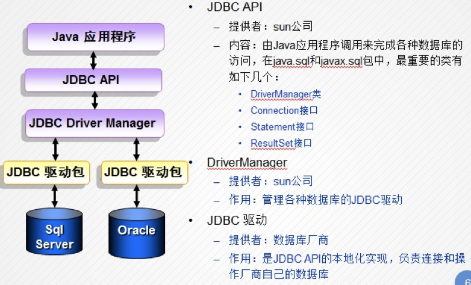
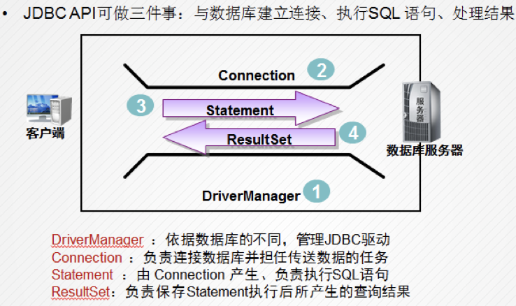
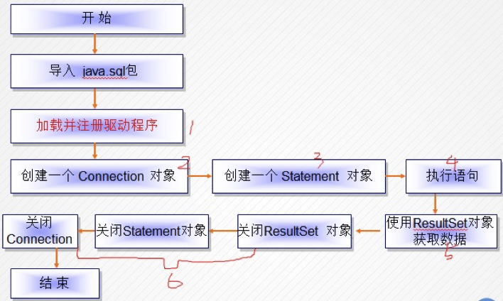
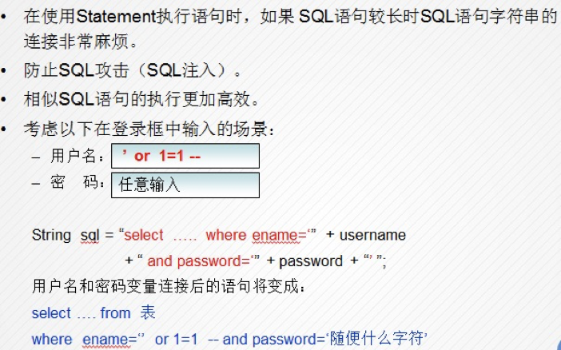
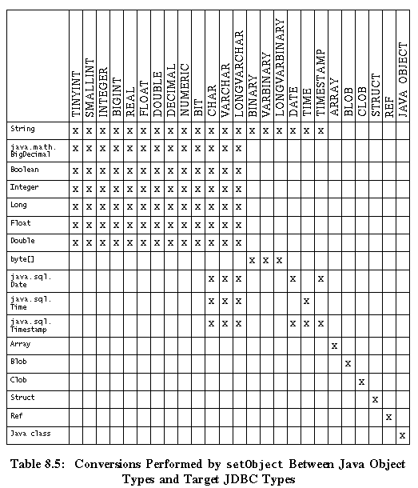
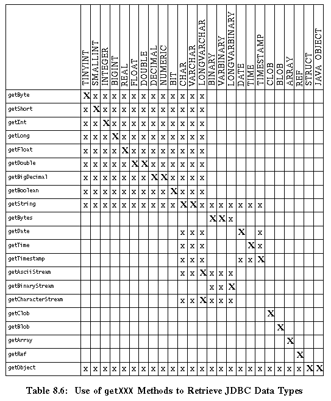

JDBC：Java语言连接数据库
一、 什么是JDBC
JDBC（Java DataBase Connectivity）是Java数据库连接技术的简称，提供连接和操作各种常用数据库的能力，JDBC只定义了Java应用程序访问数据库的标准接口层，而对于不同的数据库而言则由数据库厂商去实现JDBC接口层的功能 （叫做数据库驱动程序包）。
二、 JDBC工作原理

JDBC驱动程序包实际上是对JDK jdbc api的具体实现。可以理解成JDBC只定义了与数据库通信的规范和协议，而这些规范的具体实现由各数据库厂商自己实现也只有数据库厂商才知道怎样操作自己的数据库。

三、 JDBC访问数据库的步骤
准备工作：把驱动程序包mysql-connector-j-8.2.0.jar引入项目依赖，
Project Structure —>选中module —> Dependency —>点击右侧”+”号添加依赖库。
注册数据库动程序
1
2
3
4
5
6
7
8
9
10
11
12final String DRIVER = "com.mysql.cj.jdbc.Driver";
final String URL = "jdbc:mysql://localhost:3306/scott";
final String USERNAME = "root";
final String PASSWORD = "123456";
try {
//1. 注册数据库动程序
Class.forName(DRIVER);
} catch (ClassNotFoundException e) {
System.err.println("注册数据库驱动失败");
}通过
java.sql.DriverManager获得数据库连接java.sql.Connection1
2
3Connection conn = null;
//2. 通过`java.sql.DriverManager` 获得数据库连接 `java.sql.Connection`
conn = DriverManager.getConnection(URL, USERNAME, PASSWORD);通过
java.sql.Connection创建语句对象java.sql.Statement1
2
3Statement stmt = null;
//3. 通过 `java.sql.Connection` 创建语句对象 `java.sql.Statement`
stmt = conn.createStatement();执行 SQL 语句
select 查询：java.sql.ResultSet statement.exceuteQuery( sql : String ) 返回结果集对象
insert, update, delete 语句：int statement.executeUpate( sql : String ) 返回整数，此操作数据库影响的行数。
1
2
3ResultSet rs = null;
//4.执行 SQL 语句获得结果集对象
rs = stmt.executeQuery("select * from emp");遍历查询结果集
java.sql.ResultSet（select 操作）1
2
3
4
5
6
7
8
9
10
11
12
13
14
15
16
17List<Employee> employees = new ArrayList<>();
//5. 遍历查询结果集 `java.sql.ResultSet`（select 操作）
while (rs.next()) { //遍历每一行
//取每一列
int empno = rs.getInt("empno");
String ename = rs.getString("ename");
String job = rs.getString("job");
int mgr = rs.getInt("mgr");
Date hiredate = rs.getDate("hiredate");
double sal = rs.getDouble("sal");
double comm = rs.getDouble("comm");
int deptno = rs.getInt("deptno");
Employee e = new Employee(empno, ename, job, mgr, hiredate, sal, comm, deptno);
employees.add(e);
}关闭
java.sql.ResultSet、java.sql.Statement、java.sql.Connection对象1
2
3
4
5
6
7
8
9
10
11
12
13
14
15
16
17
18
19
20try {
......
} catch(SQLException e) {
}
finally {
try {
//6. 关闭 `java.sql.ResultSet`、`java.sql.Statement`、`java.sql.Connection` 对象
if (rs != null) {
rs.close();
}
if (stmt != null) {
stmt.close();
}
if (conn != null) {
conn.close();
}
} catch (SQLException e) {
System.err.println("关闭数据资源失败！" + e.getMessage());
}
}

注意：
注册数据驱动只需在整个项目运行时注册一次即可。不需要每次获取
Connection时都去注册驱动。注册数据库驱动程序后其它的类再去访问数据库时 JVM 就能找得到数据库驱动了，所以通常把注册驱动的代码写在某个类的*static{ ….. }*静态初始化块中。
3.1 各数据库 URL
1 | //url格式：协议:子协议:主机:port:数据库 |
四、 JDBC API 类
4.1 Connection常用方法
close()：立即释放此 Connection 对象的数据库和 JDBC 资源，而不是等待它们被自动释放。commit()：提交SQL操作，默认是自动提交SQL操作，很少情况需要手动提交。createStatement() ：创建一个 Statement (普通语句)对象并将 SQL 语句发送到数据库去执行。
prepareStatement(String sql)：创建一个PreparedStatement(预编译语句) 对象来将参数化的 SQL 语句发送到数据库，其后对占位符设置参数，这种语句类型可获得更好的性能。prepareCall(String sql)：创建一个CallableStatement对象来调用数据库存储过程。必须在 finally 块中关闭
Connection。void rollback()：取消在当前事务中进行的所有更改，并释放此Connection对象当前持有的所有数据库锁。void setAutoCommit(boolean autoCommit):将此连接的自动提交模式设置为给定状态。
4.2 Statement常用方法
（不推荐用）
Boolean execute(String sql)：执行给定的 SQL 语句（增删改查语句都可以），该语句可能返回多个结果。ResultSet executeQuery(String sql): 执行给定的 SQL 查询语句，该语句返回单个ResultSet对象。int intexecuteUpdate(Stringsql): 执行给定 SQL 语句，该语句可能为 INSERT、UPDATE 或 DELETE 语句，或者不返回任何内容的 SQL 语句（如 DDL 语句）。setQueryTimeout(int seconds)：将驱动程序等待Statement对象执行的秒数设置为给定秒数。必须在finally块中关闭
Statement。
4.3 ResultSet常用方法
next(): 将光标从当前位置向前移一行。ResultSet 光标最初位于第一行之前；第一次调用 next 方法使第一行成为当前行；第二次调用使第二行成为当前行，依此类推。close()：立即释放此 ResultSet 对象的数据库和 JDBC 资源，而不是等待该对象自动关闭时发生此操作。getXxx(int columnIndex)：使用列索引来获取数据，Xxx表示相应的数据类型。
例如：
- 获字符串用getString(int columnIndex)，getString(String columnNanme)
- 获取整数用getInt(int columnIndex), getInt(String columnName)
d) 必须在finally块中关闭ResultSet。
五、PreparedStatement
预编译语句
PreparedStatement是Statement的子类为什么要使用预编译语句？
执行效率高
安全
支持参数值占位符：？

SQL中的 “**- -**” 把后面的语句给注掉了，这样就出现了SQL漏洞。预编译语句可以避免此类问题的发生。
如果要多次执行相似的SQL语句，如：一次插入（更新、删除）几百条记录; 又如不同用户登录执行 SQL语句只有用户名和密码不同。可以使用PreparedStatement（预编译语句对象）对象来执行。由于预编译语句使用占位符 ”?”，在执行SQL之前语句会被先发送到数据库服务器进行语法检查和编译等工作，并将SQL语句加入到数据库的语句缓冲池里，随后再对SQL语句中的占位符 ”?” 设置定值。那么也就说如果你要执行1000行插入的时候第一次先SQL语句发送给数据库服务器处理，接着后面只需传递占位符的值就可以了。因此它不需每次传递大量的SQL语句也无需对每条SQL语句做语法检查和编译所以比较高效。
- 通过Connection的prepareStatement( sql )方法来创建预编译语句对象。
1 | public int save(Employee e){ |
5.1 常用方法
boolean execute()：在此PreparedStatement对象中执行 SQL 语句，该语句可以是任何种类的 SQL 语句。ResultSet executeQuery()在此PreparedStatement对象中执行 SQL 查询，并返回该查询生成的 ResultSet 对象。int executeUpdate()：在此PreparedStatement对象中执行 SQL 语句，该语句必须是一个 SQL 数据操作语言（Data Manipulation Language，DML）语句，比如 INSERT、UPDATE 或 DELETE 语句；或者是无返回内容的 SQL 语句，比如 DDL 语句。void setXxx(int parameterIndex, Xxx value): Xxx表示相应的数据类型，如：setString(…), setInt(…)等。设置点位符位置的值，第一个参数是 1，第二个参数是 2，…..setNull(int parameterIndex, java.sql.Types value): 插入或更新时处理空值的字段，通常对非char, varchar类型字段空值时使用。必须在 finally 块中关闭
PreparedStatement。
5.2 PreparedStatement与Statement的对比
| Statement | PreparedStatement | |
|---|---|---|
| 创建语句对象的方法 | Connection.createStatement( ) 创建语句对象时 不提供SQL | Connection.preparedStatement( sql ) 创建语句对象时 提供SQL |
| 查询 | executeQuery( sql ) 要提供SQL语句 | executeQuery( ) 不提供提供SQL语句，但随后要设置占位符的值 |
| 插入、更新、删除 | executeUpdate( sql ) 要提供SQL语句 | executeUpdate( ) 不提供提供SQL语句 |
六. 存储过程调用
调用存储过程可以使用CallableStatement语句类型来调用。
通过conn.prepareCall(“{call find_employee(?,?)}”); 获得一个使用CallableStatement语句对象。
设置输入（IN模式）参数的值和注册输出（OUT模式）参数。
设置输入（IN模式）参数的值使用：
CallableStatement.setString(parameterIndex, value);根据参数类型选择调用相应的方法。
注册输出（OUT模式）参数:
CallableStatement.registerOutParameter(OUT_ ParameterIndex, java.sql.Types.类型常量);
- 获得输出参数的值使用方法：getString (输出参数的索引位置); 根据输出参数类型调用相应的方法。
- 示例
1 | //调用存储过程 |
七. 批量更新
7.1 Statement 批量更新
用Statement对象执行批量更新时，用到addBatch()和executeBatch()方法。
insert 和 delete 操作与update 操作相似。
- 示例
1 | Connection connection = JdbcUtil.getConnection(); |
7.2 PreparedStatement 批量更新
使用PreparedStatement对象执行批量更新。PreparedStatement可以重用相同的SQL语句，并只需插入新参数即可执行每个更新。
insert 和 delete 操作与update 操作相似。
1 | Connection connection = JdbcUtil.getConnection(); |
将每组参数值插入到preparedStatement中，并调用*addBatch( )方法。 这会将参数值添加到批处理内部。 现在可以添加另一组值，以便插入到SQL语句中。 将全部批次发送到数据库后，将每组参数插入到SQL中并分别执行。然后执行executeBatch( )*方法，它执行所有的批量更新。 SQL语句和参数集一起发送到数据库。
注意: 批量操作应该放到事务里进行，因为它会存在某条语句执行失败的情况。
八. Java数据类型与SQL类型的映射
8.1 Conversions by setObject(index, value)
下表说明了可用*Statement.setObject(index, value)和 PreparedStatement.setObject(index, value)*方法支持将Java类型到JDBC类型赋值。

An “x” means that the given Java object type may be converted to the given JDBC type. This table show the possible values for the parameter specifying a target JDBC type that is passed to the method PreparedStatement.setObject or RowSet.setObject. Note that some conversions may fail at run time if the value presented is invalid.
8.2 Conversions by ResultSet.getXXX Methods

SQLInput.readXXX methods support only the recommended conversions. An “x” means that the method can retrieve the JDBC type. An “X“ means that the method is recommended for retrieving the JDBC type.
九、apache DButils 组件库
dbutils是apache 中的一个简化了jdbc的编程的工具组件库。
下载地址：DbUtils – JDBC Utility Component (apache.org)
官方示例：DbUtils – JDBC Utility Component – Examples (apache.org)
9.1 ResultSetHandler结果集处理器接口
ResultSetHandler 的功能是将查询结果的列名与JavaBean对象的属性名(setter方法)进行反射赋值，有以下几个常用实现类：
BeanHandler：JavaBean处理器。将查询结果集ResultSet的一行仅且一行封装成一个JavaBean对象。BeanListHandler：JavaBean列表处理器。 将多行查询集ResultSet封装成一个JavaBean列表。MapHandler：Map处理器。将查询结果集的一行仅且一行封装成一个Map对象，结果集的列名作为 Map 的key，值作为Map 的value;MapListHandler： Map列表处理器。返回一个列表其元素为Map，查询结果集的每一行封装成一个Map对象，结果的列名作为key，值作为value;ScalarHandler: 标量类型处理器。将只有一行一列的查询结果集封装成一个基本类型的值，如：Select count(*) as rows from employee;
示例：
1 | //将查询结果集通过反射机制封装成一个JavaBean实体，查询结果的列名将与JavaBean的属性名进行反射（实际上是调用 JavaBean 的setter方法） |
9.2 QueryRunner SQL执行操作类(多线程安全)
官方是这样解释的：
Executes SQL queries with pluggable strategies for handling
ResultSets. This class is thread safe.
所有对数据库的CRUD操作都通过 QueryRunner 完成。
如果创建QueryRunner实例时没有提供DataSource数据源参数则在执行CRUD操作方法时需提供数据库连接。
1 | //方式 1: 不使用数据源 |
普通查询（无占位符参数）
以下示例均以junit 单元测试提供。
1 |
|
带占位符参数查询
1 |
|
标量查询
1 |
|
保存
1 |
|
更新
1 |
|
删除
1 |
|